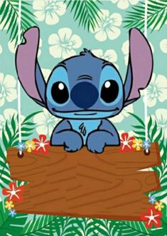

1つにとどまらず
様々な視点を養う
設計・開発チーム / 学部3年
山田 太郎
もともと再生可能エネルギーやものづくりに興味があり、 実際に手を動かしながら開発に関われる点に魅力を感じて参加しました。 活動の中では、船体や推進だけでなく、広報や運営の視点にも触れることができ、 一つの専門に閉じない広い見方が身についたと感じています。
MORE2025年度では、工学部システム創成学科、工学系研究科航空宇宙工学専攻、工学系研究科機械工学専攻、新領域創成科学研究科海洋技術環境学専攻、 グローバル教育センター（留学生）がプロジェクトで活動しました。
学生の声
東京大学ソーラーボートレーシングの活動に参加している学生に、 参加した理由や活動を通して得た学びについてインタビューしました。

設計・開発チーム / 学部3年
山田 太郎
もともと再生可能エネルギーやものづくりに興味があり、 実際に手を動かしながら開発に関われる点に魅力を感じて参加しました。 活動の中では、船体や推進だけでなく、広報や運営の視点にも触れることができ、 一つの専門に閉じない広い見方が身についたと感じています。
MORE
電装・制御チーム / 修士1年
佐藤 花子
授業や研究で得た知識を、実際の機体開発の中でどう使うかを考える経験ができることが、 このプロジェクトの大きな魅力です。 理論だけでは見えない課題に向き合うことで、 技術を現実の形に落とし込む力が養われたと感じています。
MORE
シミュレーションチーム / 修士2年
鈴木 恒一
ソーラーボートの開発は、機械、電気、制御、デザイン、運営など 多くの領域が関わる総合的なプロジェクトです。 異なる専門を持つ仲間と協力する中で、 自分の視点だけでは気づけなかった課題や可能性に出会えました。
MORE